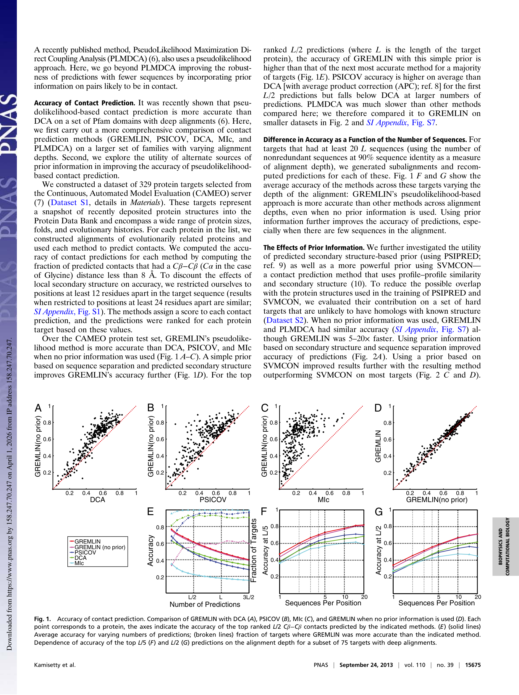

This is a 2013 paper from the Baker lab — with Sergey Ovchinnikov as second author. This is where the Baker lab enters the coevolution game, and it's a direct bridge between the statistical physics work (Paper #1) and everything that followed: large-scale structure prediction (Ovchinnikov et al. 2015), trRosetta (2020), RFdiffusion (2023).
Where the field stood in 2013:
This paper does two things: introduces GREMLIN (an improved pseudolikelihood method with structural priors), and then honestly asks how often contact prediction actually helps given that we also have more structures in the PDB every year.
GREMLIN is a Potts model. The equation is identical to Paper #1:
Paper #1 (Levy et al.): H(S) = Σi hi(si) + Σi<j Jij(si, sj)
Paper #3 (GREMLIN): P(X = x) = (1/Z) exp[ Σi vi(xi) + Σi<j wij(xi, xj) ]
Same thing — vi = hi (fields), wij = Jij (couplings), P(S) ∝ exp(−H(S)). Different notation, same model. The paper says explicitly: "This is a maximum-entropy model and is also referred to as a Markov Random Field."
The naming depends on your community:
Same math, three vocabularies.
The MSA matrix: N sequences × L positions, where each entry is one of 21 amino acids (20 + gap). Say you have 5,000 homologs of a 200-residue protein. Your input is a 5000 × 200 matrix of amino acid characters.
The pseudolikelihood doesn't model the full joint probability of an entire sequence. It models each position conditionally — given all the other positions in a sequence, what's the probability of the amino acid at position i?
P(xi = a | all other positions) = (1/Zi) × exp[ vi(a) + Σj ≠ i wij(a, xj) ]
This says: the probability that position i is alanine depends on alanine's field score at that position plus the coupling scores between alanine-at-position-i and whatever amino acid is actually sitting at every other position j in this sequence.
Zi is just a sum over 21 amino acids — trivial. The full joint likelihood would need Z summing over 21200 possible sequences — impossible. That's why pseudolikelihood is tractable.
The total objective: maximize the sum of these conditional log-probabilities across all N sequences and all L positions. Gradient descent on v and w until convergence.
After fitting, for contact prediction you collapse each coupling matrix to a single score per pair:
score(i,j) = ||wij||F (Frobenius norm), then apply APC correction, rank all pairs. Top-ranked = predicted contacts.
| Shape | What it is | |
|---|---|---|
| Input | N × L | MSA (amino acid sequences) |
| Learned fields | L × 21 | Per-site amino acid preferences |
| Learned couplings | L × L × 21 × 21 | Pairwise amino acid preferences |
| Output (contacts) | L × L | Contact score matrix |
| Output (fitness) | Scalar per sequence | H(S) = statistical energy |
| Output (conditional) | L × 21 per sequence | P(a at position i | rest) |
The model is the same Potts Hamiltonian. What you extract depends on your application — contacts, fitness, or conditional probabilities. This paper uses it for contacts. Paper #1 used it for fitness. And the conditional probability output (L × 21) is exactly what protein language models like ESM later learned to compute implicitly with masked language modeling.
All four methods fit the same Potts Hamiltonian. They differ in how they infer the parameters. None are neural networks — this is all classical statistical inference and optimization.
Approximation: Assumes the distribution is Gaussian (mean-field). Amino acids are discrete (21 states), not Gaussian, so this is wrong — but works surprisingly well. Uses large pseudocount (λ = 0.5) for regularization.
Speed: Very fast — just a matrix inversion.
Key difference from DCA: L1 regularization gives an explicitly sparse coupling matrix — more physically motivated since most residue pairs don't interact. Same Gaussian assumption though.
Key advance: No Gaussian approximation — works directly with discrete 21-state Potts model. Consistent estimator (converges to true parameters with enough data). But 5–20x slower than DCA.
The prior π(i,j) is empirically derived from known protein structures (PISCES database of non-redundant crystal structures). Two versions:
The prior enters through regularization strength, not as a direct prediction:
The prior doesn't override the coevolution signal — it adjusts how much evidence the model requires. This is a Bayesian approach: structural knowledge sets the prior, coevolution data provides the likelihood.
| DCA | PSICOV | PLMDCA | GREMLIN | |
|---|---|---|---|---|
| Model | Potts (Gaussian approx) | Potts (Gaussian approx) | Potts (exact discrete) | Potts (exact discrete) |
| Inference | Covariance inversion | Graphical lasso | Pseudolikelihood + GD | Pseudolikelihood + GD |
| Regularization | Uniform L2 | L1 + L2 (sparse) | Uniform L2 | Per-pair L2 (prior) |
| Prior info | None | None | None | Yes |
| Speed | Very fast | Moderate | Slow | Moderate |
| Neural net? | No | No | No | No |
The progression: DCA → PSICOV (better regularization, same approximation) → PLMDCA (drop the Gaussian, use pseudolikelihood) → GREMLIN (same inference, add structural priors). Each step is a motivated improvement on the same underlying Potts model.

Key observation: The GREMLIN (no prior) vs. GREMLIN (with prior) comparison (panel D) shows points tightly clustered on the diagonal. The prior gives a small bump at shallow depths, but the real gap is between GREMLIN and DCA/PSICOV (panels A–C). The improvement comes from dropping the Gaussian approximation, not from the prior.
Two separable contributions:
This is what makes the paper exceptional. They don't just show GREMLIN is better — they rigorously ask when it matters. And they find a catch-22:
They categorize all 329 CAMEO targets:
| Category | % | Meaning |
|---|---|---|
| I | 40% | Contact info not useful — can't discriminate native from models |
| II | 29% | Can rank models but can't beat the best comparative model |
| III | 10% | Can actually improve beyond comparative modeling — the sweet spot |
Across all of Pfam: only 422 out of 12,452 families (~3.4%) have both enough sequences for accurate prediction AND no close structural homolog. That's the real target list.
The paper is remarkably honest for a methods paper: it shows the tool is good, then shows that the cases where it actually helps are rare. But those 422 families became the target list for the Baker lab's next landmark: Ovchinnikov et al. 2015, which determined structures of ~600 previously unsolved protein families using GREMLIN contacts + Rosetta.
The GREMLIN framework evolved into a pipeline that reshaped the field:
The prior mechanism in GREMLIN foreshadowed the idea that you could combine coevolutionary signal with other sources of structural information — which is exactly what trRosetta and AlphaFold2 do, just with learned representations instead of hand-crafted priors.
And the conditional probability output P(a at position i | rest) from the fitted Potts model is exactly what protein language models like ESM compute via masked language modeling — but ESM learns it implicitly from raw sequences across all families, while GREMLIN fits it explicitly from a single family's MSA.